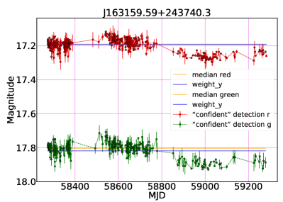
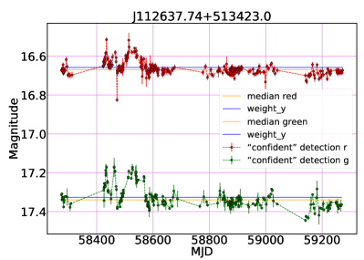
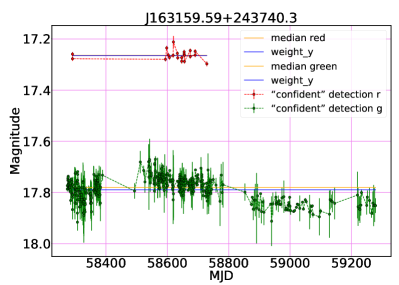
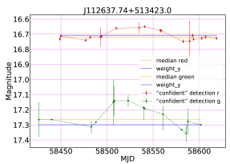
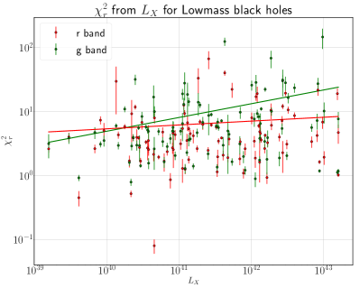

Mariia Demianenko, Igor Chilingarian, Kirill Grishin, Vladimir Goradzhanov, Victoria Toptun, Ivan Katkov, and Ivan Kuzmin
11institutetext: Moscow Institute of Physics and Technology (National Research University)
11email: demyanenko.mv@phystech.edu,
22institutetext: Sternberg Astronomical Institute, M.V. Lomonosov Moscow State University
33institutetext: HSE University
44institutetext: Center for Astrophysics – Harvard and Smithsonian (USA)
55institutetext: Department of Physics, M.V. Lomonosov Moscow State University
66institutetext: New York University Abu Dhabi (UAE)
77institutetext: Center for Astro, Particle, and Planetary Physics, NYU Abu Dhabi (UAE)
منحنيات الضوء البصرية للثقوب السوداء فائقة الكتلة خفيفة الكتلة الناتجة عن خدمة القياس الضوئي القسري التابعة لمرفق زويكي للظواهر العابرة
الملخص
نقدم في هذه الورقة خوارزمية لتصحيح منحنيات الضوء البصرية المستحصلة باستخدام خدمة القياس الضوئي القسري التابعة لمرفق زويكي للظواهر العابرة، ونطبقها على تحليل التغيرية البصرية في 136 نوى مجرية نشطة (AGN) تعمل بوساطة ثقوب سوداء فائقة الكتلة «خفيفة الكتلة» (SMBH; )، بما في ذلك 24 ثقوب سوداء متوسطة الكتلة (IMBH; ). رصدنا تغيرية في جميع المصادر تقريبًا، وحللنا أيضًا اعتمادها على السطوع الأشعي السيني في 101 جرمًا. وحددنا كذلك حدثًا مرشحًا غير معروف سابقًا من أحداث التمزق المدي (TDE) في SDSS J112637.74+513423.0.
keywords:
نوى مجرية نشطة، ثقوب سوداء متوسطة الكتلةمقدمة.
إن وجود تغيرية بصرية في مركز المجرة يُعد من أكثر دلائل تشخيص النوى المجرية النشطة موثوقية حتى الآن.
تُستخدم منحنيات الضوء البصرية للبحث عن تغيرية ذات دلالة إحصائية في الانبعاث. يحدد حجم المنطقة المضاءة بفعل نواة مجرية نشطة عند الأطوال الموجية البصرية المقياس الزمني للتغيرية العشوائية في منحنيات الضوء لهذه الأجرام، وفقًا، على سبيل المثال، لـ 2021Sci...373..789B. ويتيح ذلك استخدام منحنيات الضوء البصرية للبحث عن الثقوب السوداء متوسطة الكتلة (IMBH) وتأكيدها (2020ApJ...889..113M) لأن  يحد من سطوع النواة المجرية النشطة. ويمكن قياس
يحد من سطوع النواة المجرية النشطة. ويمكن قياس  من مقاطع خطوط الانبعاث البصرية العريضة في أطياف النوى المجرية النشطة (2004ApJ...610..722G; optic_fm; 2018ApJ...863....1C).
من مقاطع خطوط الانبعاث البصرية العريضة في أطياف النوى المجرية النشطة (2004ApJ...610..722G; optic_fm; 2018ApJ...863....1C).





البيانات.
عرّف 2018ApJ...863....1C عينة من الثقوب السوداء متوسطة الكتلة من تحليل الأطياف البصرية باستخدام الملاءمة الطيفية الكاملة NBursts (2007IAUS..241..175C; 2007MNRAS.376.1033C) في فهرس RCSED (2017ApJS..228...14C)، مع  مقدرة بين و. وقد تأكد 10 من هذه الأجرام في الأشعة السينية في 2018ApJ...863....1C، ثم تأكد 14 أخرى لاحقًا من بيانات أشعة سينية جديدة وأرشيفية. نعرّف الثقوب السوداء فائقة الكتلة خفيفة الكتلة بأنها ثقوب سوداء فائقة الكتلة لها .
تأكد 112 جرمًا من العينة الموسعة لمرشحي الثقوب السوداء فائقة الكتلة خفيفة الكتلة بوساطة بيانات أشعة سينية أرشيفية. وفي المجمل، درسنا 136 منحنى ضوء بصريًا لـ 24 ثقوب سوداء متوسطة الكتلة مؤكدة و112 ثقوب سوداء فائقة الكتلة خفيفة الكتلة مؤكدة. ومن أصل 136 جرمًا، امتلك 101 نقاطًا ضوئية في مرشحين هما ‘ZTF r’ و’ZTF g’.
مقدرة بين و. وقد تأكد 10 من هذه الأجرام في الأشعة السينية في 2018ApJ...863....1C، ثم تأكد 14 أخرى لاحقًا من بيانات أشعة سينية جديدة وأرشيفية. نعرّف الثقوب السوداء فائقة الكتلة خفيفة الكتلة بأنها ثقوب سوداء فائقة الكتلة لها .
تأكد 112 جرمًا من العينة الموسعة لمرشحي الثقوب السوداء فائقة الكتلة خفيفة الكتلة بوساطة بيانات أشعة سينية أرشيفية. وفي المجمل، درسنا 136 منحنى ضوء بصريًا لـ 24 ثقوب سوداء متوسطة الكتلة مؤكدة و112 ثقوب سوداء فائقة الكتلة خفيفة الكتلة مؤكدة. ومن أصل 136 جرمًا، امتلك 101 نقاطًا ضوئية في مرشحين هما ‘ZTF r’ و’ZTF g’.
تحليل التغيرية البصرية في الثقوب السوداء فائقة الكتلة خفيفة الكتلة والثقوب السوداء متوسطة الكتلة.
لتقدير سعة التغيرية البصرية ومقياسها الزمني، نحتاج إلى إنشاء منحنيات ضوء مُعايرة لا تتضمن تغيرات منهجية تتجاوز 10-15% من تدفق المجرة المضيفة. نستخدم الصور التفاضلية التي تُستحصل بطرح الصورة المرجعية من صورة علمية حالية مطابقة لدالة انتشار النقطة (PSF). والصورة المرجعية هي متوسط مرجح لجميع الصور في حقل معين، خُفِّضت دقته إلى الدقة نفسها باستخدام مرشح غاوسي. بعد ذلك تُجرى قياسات ضوئية بدالة انتشار النقطة من دون فرض قيود على موجبية التدفق. وقد نُفذ هذا النهج في خدمة القياس الضوئي القسري التابعة لـ ZTF.
لا تمتلك النقاط الناتجة دائمًا نقطة الصفر نفسها، لأنها رُصدت في أرباع مختلفة من CCDs مختلفة في المستوى البؤري للتلسكوب. وإضافة إلى ذلك، تُجرى تصحيحات اللون باستخدام اللون الصفري من نظام PanSTARRS الضوئي. ولا يكون هذا التصحيح معرفًا جيدًا إلا لتلك الأجرام التي يتاح لها قياس لون صفري؛ وإلا فيُقدَّر التصحيح باستيفاء قيم PanSTARRS. ولكل ربع من CCD ولكل حقل، يُحدَّد الحدان الأعلى والأدنى للتدفق في ذلك الكاشف، وينبغي استبعاد النقاط التي تقع قياسات تدفقها، المستمدة من رصد محدد، خارج هذين الحدين (2019PASP..131a8003M).
هنا، ضبطنا عتبة نسبة الإشارة إلى الضجيج (SNR) على 3. وضُبطت المسافة إلى أقرب مرجع على  1 ثانية قوسية، وساعدت مؤشرات جودة البكسلات على حذف القيم الشاذة المرتبطة بضربات الأشعة الكونية غير المصححة والبكسلات الساخنة. وأُجري تصحيح نقطة الصفر لكل رصد، استنادًا إلى ربع CCD ومتوسط الكتلة الهوائية أثناء الرصد. ثم عرّفنا مستوى الدلالة وفقًا لمعيار
1 ثانية قوسية، وساعدت مؤشرات جودة البكسلات على حذف القيم الشاذة المرتبطة بضربات الأشعة الكونية غير المصححة والبكسلات الساخنة. وأُجري تصحيح نقطة الصفر لكل رصد، استنادًا إلى ربع CCD ومتوسط الكتلة الهوائية أثناء الرصد. ثم عرّفنا مستوى الدلالة وفقًا لمعيار  ، وهو المستوى الذي لا يكون عنده منحنى الضوء متوافقًا مع ضجيج أبيض مضاف إلى ثابت. وقد أظهرت كثير من الأجرام المدروسة تغيرية ذات دلالة إحصائية على مقاييس زمنية تمتد من أيام إلى أشهر.
، وهو المستوى الذي لا يكون عنده منحنى الضوء متوافقًا مع ضجيج أبيض مضاف إلى ثابت. وقد أظهرت كثير من الأجرام المدروسة تغيرية ذات دلالة إحصائية على مقاييس زمنية تمتد من أيام إلى أشهر.
يعرض الشكل 1 مثالين لمنحنيات ضوء غير مصححة من القياس الضوئي القسري لـ ZTF (الصف العلوي). ويعرض الصف السفلي من الشكل 1 منحنيات الضوء بعد التصحيح. وفي الشكل2 نعرض اعتماد سعة التغيرية البصرية (مع أخطاء حُسبت باستخدام إعادة المعاينة) على السطوع الأشعي السيني لـ 101 جرمًا من عينتنا.
كذلك، لوحظ توهج قوي بسعة 0.25 قدرًا في الجرم J112637.74+513423.0 لمدة تقارب 3 أشهر، ويمكن أن يكون إما انفجار مستعر أعظم محجوبًا بشدة بالغبار أو نجمًا مزقته قوى المد في جوار الثقب الأسود فائق الكتلة (TDE). نعرض منحنى ضوء ZTF لمرشح TDE في الشكل 1 (أعلى اليمين).ويُعرض منحنى ضوء أكثر موثوقية بعد التصحيح في الشكل 1 (أسفل اليمين): إذ تتبع نقاط البيانات “النتوء” بصورة موثوقة حتى في ربع CCD واحد، مما يؤكد بوضوح أن التوهج حقيقي.
تتمثل العقبة التي تحد من قابلية تحليلنا للتوسع وتجعل دراسة آلاف النوى المجرية النشطة غير ممكنة حتى الآن في أن خدمة القياس الضوئي القسري التابعة لـ ZTF لا تستطيع معالجة أكثر من 100 جرمًا في كل مرة، وأن معالجة كل طلب تستغرق من ساعات إلى أسابيع.
الاستنتاجات.
أكد استخدام التغيرية البصرية الجودة العالية لاختيار مرشحي الثقوب السوداء متوسطة الكتلة والثقوب السوداء فائقة الكتلة خفيفة الكتلة باستخدام المكوّن العريض ، وسيتيح لنا في المستقبل استبعاد المرشحين الذين تكون للخطوط العريضة فيهم طبيعة عابرة أو مرتبطة بتكوّن النجوم. كما يمكن استخدام تحليل منحنيات الضوء لتأكيد مرشحي الثقوب السوداء متوسطة الكتلة والثقوب السوداء فائقة الكتلة خفيفة الكتلة أو اختيارهم على نحو مستقل، لأن هناك ارتباطات قوية بين والمقياس الزمني البصري وفقًا لـ 2021Sci...373..789B. شكر وتقدير. تحظى MD بدعم مشروع RSF 17-72-20119.